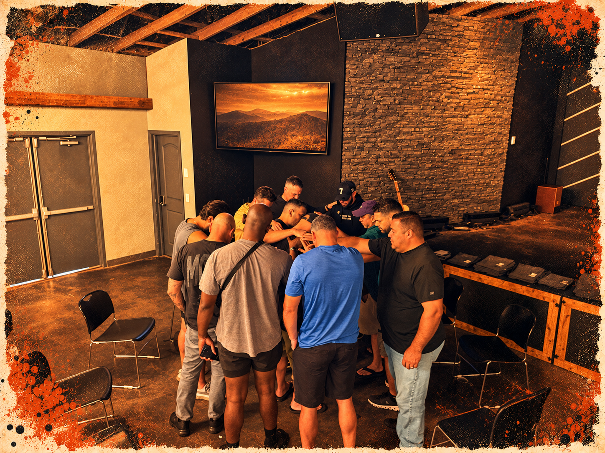

Open the Word
Read a passage carefully. Consider what it reveals about God and how it shapes your life.

Build habits that deepen faith and help you lead with humility and courage.
Read a passage carefully. Consider what it reveals about God and how it shapes your life.
Begin with gratitude, bring your needs before God, and leave room to listen.
Choose one act of obedience, service, or reconciliation to carry into your week.
Bring faith into relationships, work, family, and the decisions you make each day.
Lead by listening, taking responsibility, and serving the people entrusted to you.